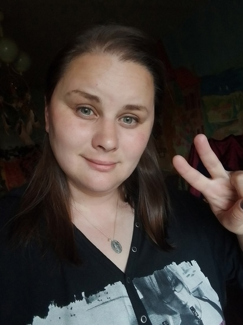

Мария Столповских: Я очень люблю посмеяться над собой
Егор Новожилов: Привет, Маша! Или всё-таки Мария?
Мария Столповских: Я очень люблю своё полное имя, но порой мне кажется, это звучит слишком официально.
Егор Новожилов: Люди воспринимают тебя как Художницу и как актрису. Так всё-таки кто ты больше Художница или Актриса?
Мария Столповских: Зерном своей профессии я выбрала работу актёра.
Егор Новожилов: Ты бы предпочла сниматься в кино или играть в театре?
Мария Столповских: И там, и там. В театре ты получаешь эмоциональную подпитку от зрителя. Кино очень массовое искусство, которое так же способно дать максимум реализации.
Егор Новожилов: Какую роль бы ты сыграла с большим удовольствием: комическую или трагическую?
Мария Столповских: Комическую. Я очень люблю посмеяться над собой.
Егор Новожилов: Говорят, что это самый сложный жанр в кино. Не боишься трудностей?
Мария Столповских: Нет, у меня более чем в порядке с чувством юмора)))
Егор Новожилов: А как ты относишься к импровизации? Или тебе лучше делать по накатанному плану?
Мария Столповских: Отлично отношусь к импровизации! Когда забываю текст, достаточно легко выкручиваюсь.
Егор Новожилов: Ясно. Вернёмся к живописи.. Можешь ли ты вспомнить свой первый рисунок?
Мария Столповских: О! Мы с моей тётей в детстве очень любили рисовать Крейсер Аврора! )))
Егор Новожилов: Вешали его на холодильник?
Мария Столповских: Нет, у нас был очень маленький холодильник, кажется, Вятка. В нашем детстве ещё не было такой традиции вешать рисунки на холодильник.
Егор Новожилов: А чьё творчество тебя более всего вдохновляет?
Мария Столповских: Хм! Надо подумать. Я люблю хорошие книги. Из любимых я бы назвала Джона Ле Карре и Лоренса ван дер Поста.
Егор Новожилов: Твой любимый фильм?
Мария Столповских: Их очень много! Но если выбрать, какой-то один, думаю это "Счастливого Рождества мр. Лоуренс" Нагиса Осимы, по роману того же Ван дер Поста, ну или "Охотник на оленей" Майкла Чимино. Уфф какой-то один всё равно не получилось назвать.
Егор Новожилов: Твоя любимая картина?
Мария Столповских: Их так же очень много! Я обожаю Лейтона, конечно же Ван Гога, Брюллова, очень сложно выбрать что-то одно.
Егор Новожилов: Спасибо за интервью. Удачи в дальнейшем творчестве! Мы закончили)
Мария Столповских: Благодарю Вас от души! Было очень приятно побеседовать!
Интервью взял Егор Новожилов 12 июня 2025 года
Санкт-Петербург, Колпино